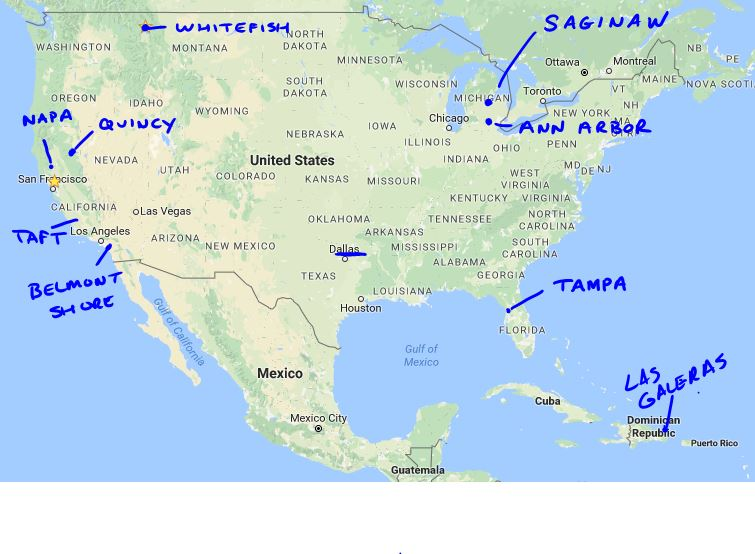

My Wanderings

These are the places that I have called Home.
Saginaw, Michigan is my birthplace and my hometown through high school.
Ann Arbor, Michigan is where I went to University. I also lived and worked there for a couple years, owning and operating a restaurant with my wife.
Tampa, Woodland Hills and Dallas were short stops while I was in a Management Training Program with GTE Telephone Operations.
Belmont Shores is where I lived for 4 years while teaching high school physics at Edison High School in Huntington Beach, California.
I lived in Taft for 1 year, while teaching at Taft College. Same is true for Napa (Napa Valley College - 1 year) and Quincy (Feather River College - 2 years).
Recently, I spent a couple summers in South Lake Tahoe and Whitefish, Montana (This is my wife’s hometown and it is in beautiful Glacier National Park territory). In South Lake Tahoe, we started up a little business renting and selling paddleboards.
I also have spent a couple winters in Las Galeras, Samana, Dominican Republic when I was between jobs and looking for a nice climate, fresh fruits and inexpensive living (How’s renting a gorgeous house within a 10 minute walk to multiple beaches for less than $200/month?)